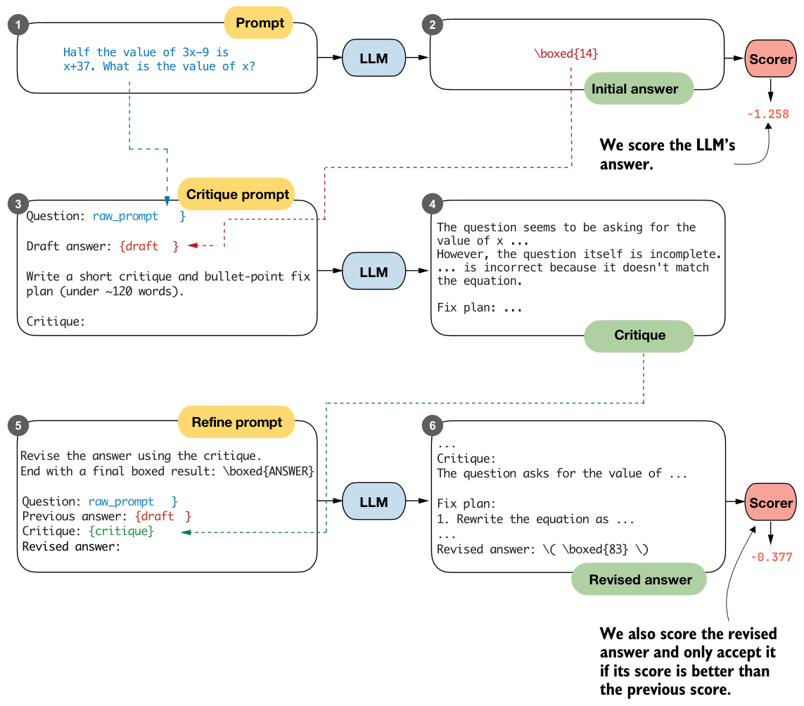

5.8Coding the self-refinement loop
We’ll now package the previous section’s manual self-refinement steps into a convenient function, simplifying the use of self-refinement and allowing the process to be repeated for a fixed number of iterations.
In addition, the function will support plugging in the scoring methods we developed earlier in the chapter (heuristic scoring and logprob scoring) to compute a score for each answer (figure 5.21). This score can then be used to decide whether a refined answer should be accepted.

In figure 5.21, the revised answer receives a higher logprob score (-0.377) than the initial answer (-1.258), which makes it reasonable to accept the revision. In practice, self-refinement can also produce worse answers, especially when it’s run for multiple iterations. The scorer therefore provides a way to decide whether a revised answer represents an improvement.
The complete code, which combines the steps from the previous section and adds an iterations parameter and a scoring function (score_fn) option, is shown in the following listing.
def self_refinement_loop(
model,
tokenizer,
raw_prompt,
device,
iterations=2,
max_response_tokens=2048,
max_critique_tokens=256,
score_fn=None,
prompt_renderer=render_prompt,
prompt_suffix="",
verbose=False,
temperature=0.7,
top_p=0.9,
):
steps = []
prompt = prompt_renderer(raw_prompt) + prompt_suffix
current_full = generate_text_stream_concat_flex(
model=model,
tokenizer=tokenizer,
prompt=prompt,
device=device,
max_new_tokens=max_response_tokens,
verbose=False,
generate_func=generate_text_top_p_stream_cache,
temperature=temperature,
top_p=top_p,
)
current_extracted = extract_final_candidate(
current_full, fallback="number_then_full"
)
if score_fn:
current_score = score_fn(answer=current_full, prompt=prompt)
else:
current_score = 0.0
for it in range(iterations):
draft_before_full = current_full
draft_before_extracted = current_extracted
score_before = current_score
critique_prompt = make_critique_prompt(
raw_prompt, draft_before_full
)
critique_full = generate_text_stream_concat_flex(
model=model,
tokenizer=tokenizer,
prompt=critique_prompt,
device=device,
max_new_tokens=max_critique_tokens,
verbose=False,
generate_func=generate_text_top_p_stream_cache,
temperature=temperature,
top_p=top_p,
)
refine_prompt = make_refine_prompt(
raw_prompt, draft_before_full, critique_full
)
revised_full = generate_text_stream_concat_flex(
model=model,
tokenizer=tokenizer,
prompt=refine_prompt,
device=device,
max_new_tokens=max_response_tokens,
verbose=False,
generate_func=generate_text_top_p_stream_cache,
temperature=temperature,
top_p=top_p,
)
revised_extracted = extract_final_candidate(
revised_full, fallback="number_then_full"
)
if score_fn:
revised_score = score_fn(
answer=revised_full, prompt=prompt
)
else:
revised_score = 0.0
step = {
"iteration": it + 1,
"draft_full": draft_before_full,
"draft_extracted": draft_before_extracted,
"critique": critique_full,
"revised_full": revised_full,
"revised_extracted": revised_extracted,
"score_before": score_before,
"score_after": revised_score,
}
steps.append(step)
if verbose:
print(
f"[Refinement {it+1}/{iterations}]"
f"\nCurrent: {draft_before_extracted}"
f"\nRevised: {revised_extracted}"
f"\nScore before: {score_before:.3f}"
f"\nScore after: {revised_score:.3f}"
f"\n{'=' * 25}\n"
) if revised_score >= current_score:
current_full = revised_full
current_extracted = revised_extracted
current_score = revised_score
return {
"final_full": current_full,
"final_extracted": current_extracted,
"steps": steps,
}The self_refinement_loop function runs the self-refinement procedure from the previous section for one or more iterations (for it in range(iterations)). At the end of each iteration, it compares the revised score to the current score (revised_score >= current_score) and keeps the revised answer only if its score is equal or higher.
Using a scoring function is optional. When score_fn=None (the default), the score is always set to 0.0. Since 0.0 >= 0.0 evaluates to True, the most recent answer is always accepted when running multiple refinement iterations.
Then we run the self-refinement loop using the average logprob scorer, avg_logprob_ answer. This function, shown in listing 5.8, takes several arguments (model, tokenizer, prompt, answer, and device). As you can see in the previous listing, the scoring function is called with only two arguments:
# ...
if score_fn:
revised_score = score_fn(
answer=revised_full, prompt=prompt
)
# ...To make avg_logprob_answer compatible with this score_fn call, we can use the partial function from Python’s built-in functools module to prespecify the remaining arguments.
from functools import partial
avg_logprob_score = partial(
avg_logprob_answer,
model=model,
tokenizer=tokenizer,
device=device
)Now we can use the avg_logprob_score function in the self-refinement loop:
torch.manual_seed(1)
results_logprob = self_refinement_loop(
model=model,
tokenizer=tokenizer,
raw_prompt=raw_prompt,
device=device,
iterations=2,
max_response_tokens=2048,
max_critique_tokens=256,
score_fn=avg_logprob_score,
verbose=True,
temperature=0.7,
top_p=0.9,
)The output is shown here:
[Refinement 1/2]
Current: 10
Revised: 83
Score before: -0.855
Score after: -0.226
=========================
[Refinement 2/2]
Current: 83
Revised: 83
Score before: -0.226
Score after: -1.320
=========================Looking at the preceding results, we can see that the model corrected the initially incorrect answer (from 10 to 83) in the first iteration, and the score improved from-0.855 to -0.226. In the second iteration, the score gets worse, but that’s okay since we already have the correct answer.
We can also access the final answer extracted from the best-scoring response, typically from its boxed content when present, via results_logprob["final_extracted"], which in this case returns 83. If you are interested in the full answer, use results_logprob["final_full"]. To read through the critiques and longer answers, you can print the results_logprob dictionary, which contains the detailed results for all iterations.